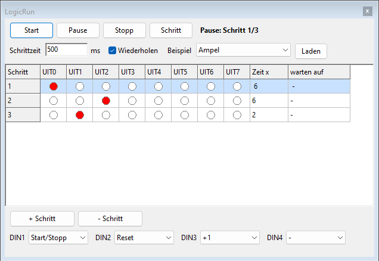
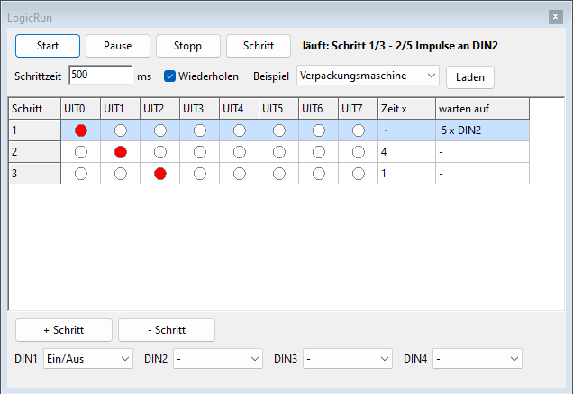

LogicRun ist ein Block, den Sie nicht verdrahten, sondern programmieren. Sie schreiben eine Folge von Schritten; jeder Schritt schaltet einige Ausgänge ein. So bauen Sie eine Ampel, ein Lauflicht oder einen Zähler, ohne ein einziges Gatter zu verwenden.
Sie verbinden den Block mit gewöhnlichen Drähten: Schalter und Sensoren mit den Eingängen, die Ausgänge mit Lampen, Relais, einem Summer oder den Eingängen anderer Bauteile.
Auf einem Panel kann nur ein LogicRun-Block stehen. Doppelklicken Sie auf den Block oder wählen Sie Programm bearbeiten... im Rechtsklickmenü, um das Fenster zu öffnen. Über das Rechtsklickmenü können Sie den Block auch sperren oder löschen.

| Schaltfläche oder Feld | Was macht es? |
|---|---|
| Start | Das Programm läuft, Schritt für Schritt. |
| Pause | Das Programm bleibt beim aktuellen Schritt stehen; die Ausgänge bleiben, wie sie sind. |
| Stopp | Das Programm hält an und geht zum Anfang zurück; alle Ausgänge gehen aus. |
| Schritt | Einen Schritt weiter, praktisch, um Ihr Programm Schritt für Schritt zu prüfen. |
| Schrittzeit | Wie lange eine Zeiteinheit dauert, in Millisekunden (500 ms = eine halbe Sekunde). |
| Wiederholen | Ein: nach dem letzten Schritt beginnt das Programm von vorn. Aus: es hält beim letzten Schritt an. |
| Beispiel und Laden | Ein fertiges Programm laden (siehe Beispiele). |
| + Schritt und - Schritt | Einen Schritt nach dem gewählten Schritt einfügen oder den gewählten Schritt löschen. |
| DIN1 bis DIN4 | Was jeder Eingang tut. |
| warten auf | Klicken Sie in diese Spalte, damit ein Schritt auf einen Eingang oder eine Anzahl Impulse wartet (siehe Warten). |
Oben sehen Sie, ob das Programm läuft und bei welchem Schritt es ist. Der aktuelle Schritt ist in der Tabelle hellblau.
Ein Programm hat höchstens 64 Schritte.
Ein Schritt dauert normalerweise Zeit x mal die Schrittzeit. In der Spalte warten auf können Sie einen Schritt stattdessen warten lassen. Klicken Sie in diese Spalte und wählen Sie:
| Auswahl | Der Schritt dauert, bis ... | Zum Beispiel |
|---|---|---|
| Nichts | die Zeit um ist (wie üblich) | eine Ampel |
| Bis Eingang ein | der gewählte Eingang ein ist | ein Endschalter: der Wagen fährt, bis er die Wand erreicht |
| Bis Eingang aus | der gewählte Eingang aus ist | warten, bis jemand einen Taster loslässt |
| Bis Anzahl Impulse am Eingang | so viele Impulse am Eingang angekommen sind | Kartons zählen: nach 5 Kartons hält das Band an |

Ein Schritt, der wartet, hat keine Zeit: in der Spalte Zeit x steht dann ein Strich. Oben im Fenster und unten im Block sehen Sie, worauf der Schritt wartet und wie viele Impulse schon gezählt sind.
Die meisten Funktionen reagieren in dem Moment, in dem der Eingang eingeschaltet wird: verwenden Sie dafür einen Taster. Für einen Schalter gibt es die Funktion Ein/Aus.
| Funktion | Was passiert, wenn der Eingang eingeschaltet wird? |
|---|---|
| Start/Stopp | Steht das Programm, startet es; läuft es, geht es in Pause. |
| Reset | Das Programm geht zum ersten Schritt. |
| +1 | Das Programm geht einen Schritt weiter. |
| Ein/Aus | Das Programm läuft, solange der Eingang ein ist. Geht er aus, hält das Programm an und alle Ausgänge gehen aus (praktisch mit einem Schalter). |
| - | Nichts: der Eingang wird nicht verwendet. |
| Beispiel | Ausgänge |
|---|---|
| Ampel | UIT0 rot, UIT1 gelb, UIT2 grün. |
| Lauflicht | UIT0 bis UIT7 gehen nacheinander an. |
| Motor links/rechts | UIT0 Motor links, UIT1 Motor rechts, mit einem kurzen Halt dazwischen. Verbinden Sie sie mit L und R eines Motors. |
| 4-Bit-Zähler | UIT0 bis UIT3 zählen binär von 0 bis 15 (UIT0 = 1, UIT1 = 2, UIT2 = 4, UIT3 = 8). |
| Wagen | UIT0 vorwärts, bis DIN3 ein ist (Endschalter), kurzer Halt, UIT1 rückwärts bis DIN4; DIN1 Ein/Aus. Verbinden Sie UIT0 mit R und UIT1 mit L eines Motors. |
| Verpackungsmaschine | UIT0 Förderband, bis 5 Impulse an DIN2 angekommen sind (Kartons), UIT1 Verpacken (2 s), UIT2 setzt einen Zähler auf null; DIN1 Ein/Aus. |
Das Programm wird zusammen mit dem Panel in der Paneldatei (.lpl) gespeichert.
Rückgängig funktioniert auch für Änderungen am Programm. Eine ältere
Version von Logic überspringt den LogicRun-Block.
Probieren Sie es selbst in Lektion 12: Programmieren mit LogicRun.